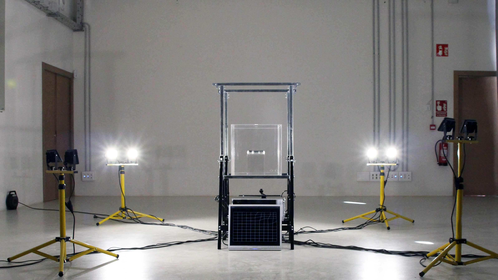
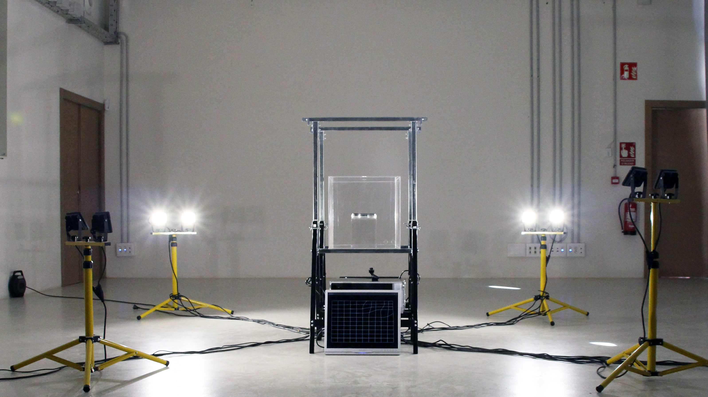
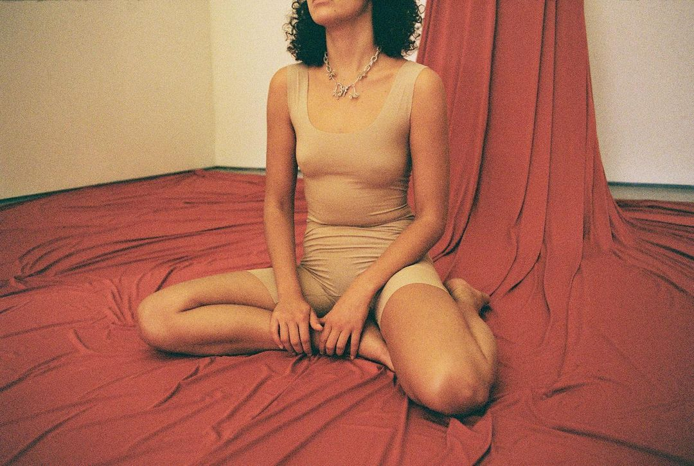
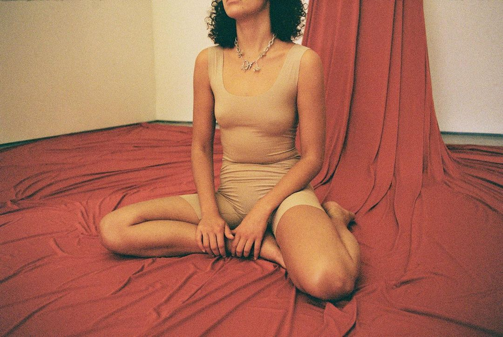

Mycelium driven Brand
Eina Bosc
2024
Mycelium is the main element of mycorrhiza, key in the symbiosis between fungi and plant roots. It is the facilitator of communication between the organisms that make up a forest. Like neural tissue, the mycelium has no center, but places: it forms a network through which trees and other ecological agents can communicate, cooperate, ultimately making a forest act like a forest. The mycelium has served to give EINA Bosc its graphic identity, through a living model housed in a mobile incubator that lives and evolves within the school.EINA Bosc is a space of co-creation and community, where symbiotic and generous associations, porous networks, fluid emanations and cross influences are promoted. Thanks to mycelium, a number of organisms spring up in the ecosystem, but it also processes the events that take place there: it learns, it digests, it reacts.This mobile incubator therefore serves as the engine of EINA bosc's identity. In real time, data is collected on the growth of the organism, and it modifies a mesh, a network that becomes the basic grid of the designs for EINA Bosc.


Muérdago — Adelaida
Live Sónar
2024
Art direction, scenography and lightning for Adelaida's new album presentation at Sónar.


Desencajar
Exhibition system
2024
The chained act of fitting and unfitting is the creative gymnastics that is established in the action of designing; organic actions that allow us to recognise and miss, to play, explore or grope, search and discover.Disengaging and fitting together are also movements that keep us in constant displacement, defining us as flexible and fluid communities, mutant, in transition inside and outside the spatial, temporal and affective limits of EINA."DESENCAJAR" is the name given to the set of Final Degree Projects.

Sin_titulo_final_final
Exhibition concept and space design
2022
‘SINTÍTULO_FINALFINAL' refers to the design process followed by the students of the 4th year of the Bachelor of Design to reach this point in their academic career. A process that is always under construction, since, although it is a final presentation, it is not an absolute definitive, but just another point in their professional and personal growth.The wink in the title alludes to the way students often keep their final files.
 

CW Scenography
Porto Design Biennale
2021
Scenography for the Control Wars Laboratorio of @b3c0mingc in collaboration with @weareholon during the @portodesignbiennale. A playful space for the participants of the event guided by the poetess. A reflection on power structures. A large skirt was created to generate a space of security and care, but also control and power of lap games.